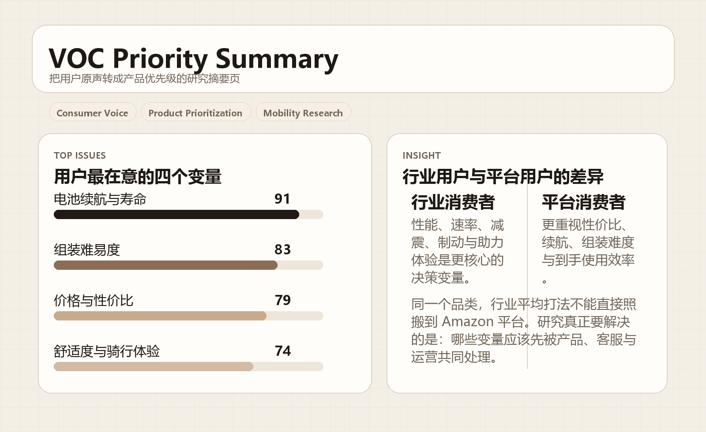
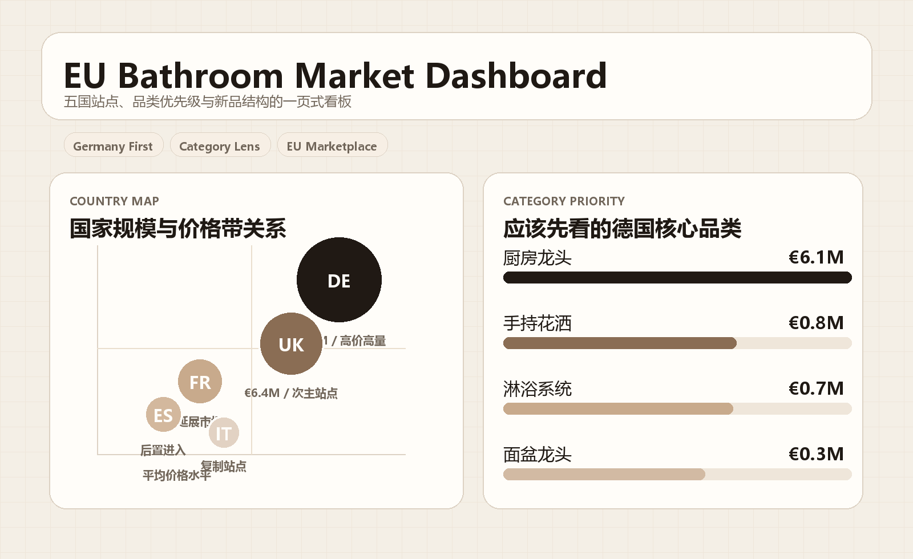

项目案例
8按四条核心能力线组织，每条能力线都有完整项目支撑，而不是单点展示。
Capability Portfolio / Selected Work
每份档案都经得起翻。
这不是单纯的项目陈列，而是一套围绕职业能力展开的作品集：消费者洞察、市场进入判断、数据分析与产品定义、以及跨团队推进。每条能力线都至少有两个案例支撑，展示我如何把模糊问题拆清楚，把证据做扎实，再把结论转成可执行的业务动作。
项目案例
8按四条核心能力线组织，每条能力线都有完整项目支撑，而不是单点展示。
覆盖国家
9中国、美国、泰国、墨西哥、英国，以及欧洲五国站点的市场与平台判断。
数据来源
6VOC 评论、论坛、客服记录、电商平台、行业报告、标杆企业资料交叉使用。
交付导向
4最终都回到进入策略、产品定义、优先级判断或跨团队推进，而不止停在结论本身。
Capability 01
聚焦真实需求、使用障碍与购买决策变量，输出可直接服务产品与运营的判断。
Capability 02
不是看见增长就进入，而是用结构化比较把真正值得投入的机会筛出来。
Capability 03
把分散数据整理成清晰的产品语言，让研发、业务与管理层可以在同一张板上做决定。
Capability 04
研究的价值不止在“看清楚”，还在于把资源、节奏和风险放到一个能推进的执行结构里。
How I work
我不把“信息很多”误当成“研究很充分”。先建立判断框架，再决定哪些数据值得继续深挖，能显著减少无效分析。
How I judge
无论是用户反馈、类目数据还是行业趋势，我最终都会把它们转成优先级、进入顺序、价格带或资源配置建议。
How I deliver
我关心的不是“报告是否完整”，而是它能不能真正帮助团队做决定、分任务、控风险，并往下推进。
Report Look
我把报告型位图也加入了案例页里，让页面既能展示“数据可视化能力”，也能展示“正式交付物的视觉可信度”。


Free Sample
参考咨询公司官网常见的样本报告入口，我在项目集合页加入了可直接下载的 PDF 样本。当前示例文件命名为 free sample.pdf，点击即可获取。